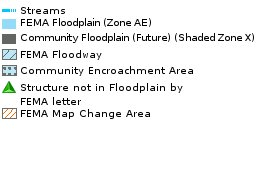

|
3D Interactive Floodzone Mapping |
| Notes: |  |
This system is subject to current public information rules and regulations. Information presented on this web site is considered public information and may be distributed or copied. Mecklenburg County provides no warranty, expressed or implied, as to the accuracy, precision, timeliness, completeness, or any other aspect of the data provided.